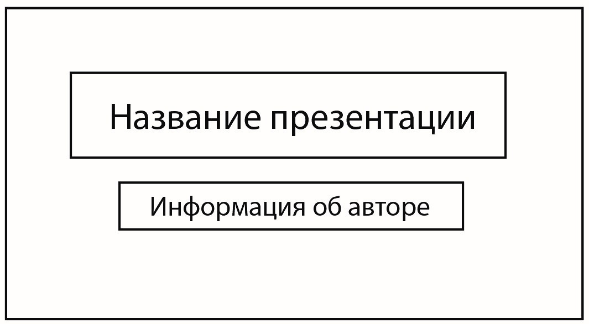
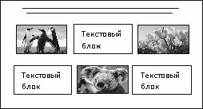
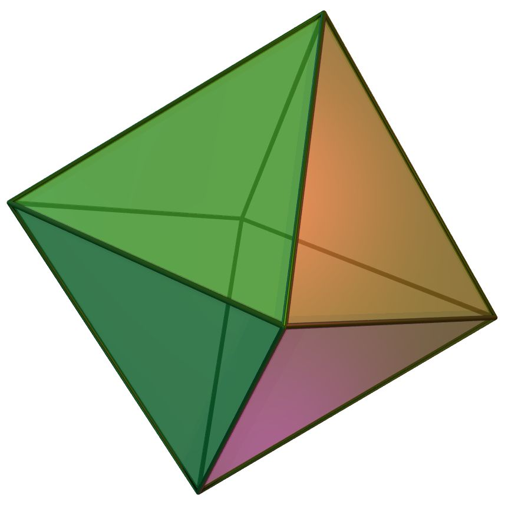
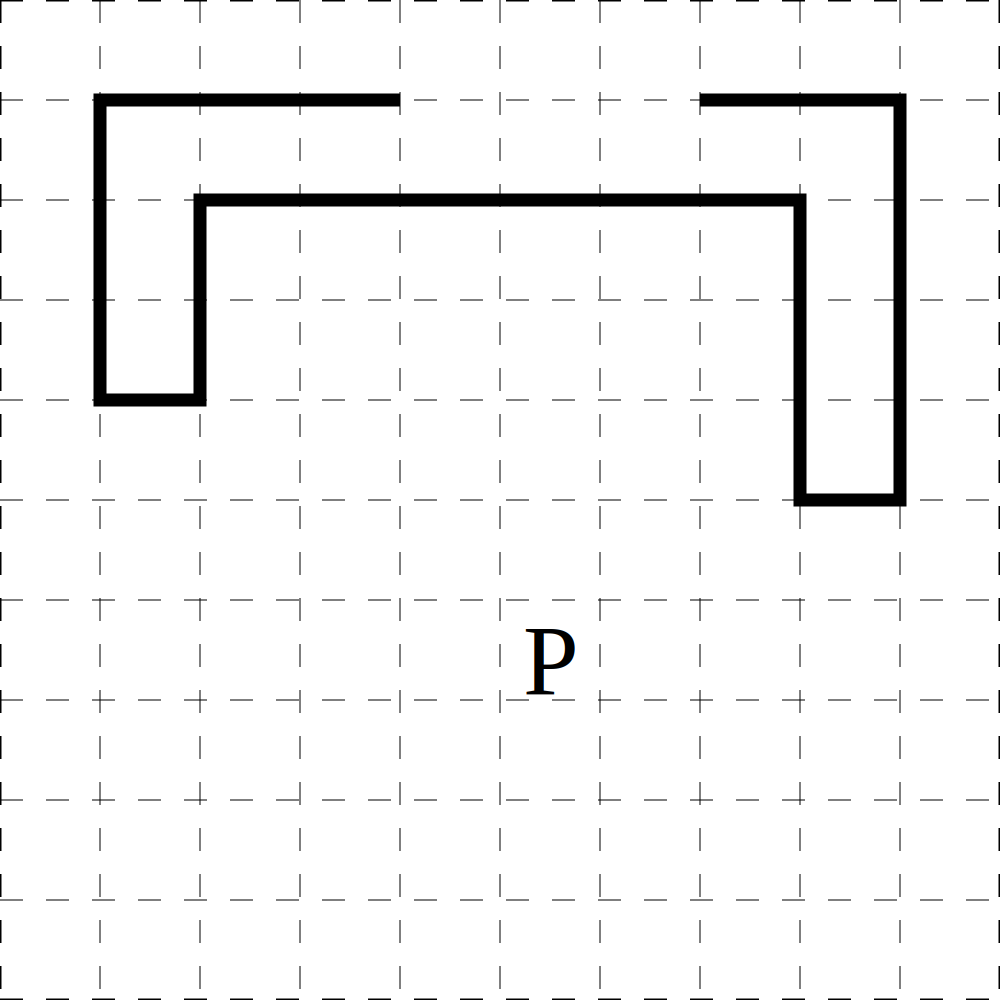
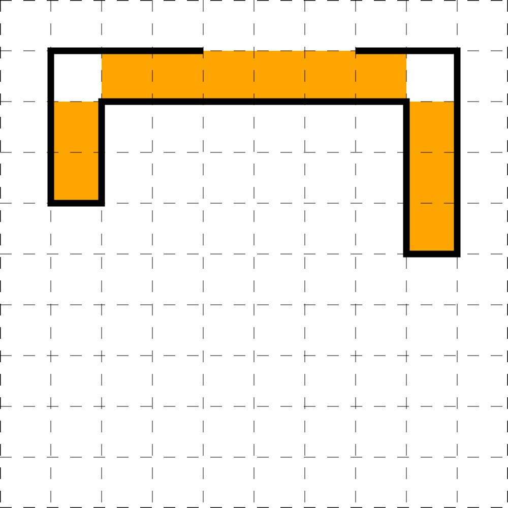

Основной государственный экзамен по ИНФОРМАТИКЕ
Инструкция по выполнению работы
Работа состоит из двух частей, включающих в себя 15 заданий. Часть 1
содержит 10 заданий с кратким ответом; часть 2 содержит 5 заданий, которые
необходимо выполнить на компьютере.
На выполнение работы по информатике отводится 2 часа 30 минут
(150 минут). Вы можете самостоятельно определять время, которое отводите
на выполнение заданий, но рекомендуемое время на выполнение заданий
части 1 – 30 минут, на выполнение заданий части 2 – 2 часа (120 минут).
Ответы к заданиям 1–12 записываются в виде числа, слова,
последовательности букв или цифр. Ответ запишите в поле ответа в тексте
работы, а затем перенесите в бланк ответов № 1.
Результатом выполнения каждого из заданий 13–15 является отдельный
файл. Формат файла, его имя и каталог для сохранения Вам сообщат
организаторы.
Все бланки заполняются яркими чёрными чернилами. Допускается
использование гелевой или капиллярной ручки.
При выполнении заданий можно пользоваться черновиком.
Записи в черновике, а также в тексте контрольных
измерительных материалов не учитываются при оценивании
работы.
Баллы, полученные Вами за выполненные задания, суммируются.
Постарайтесь выполнить как можно больше заданий и набрать наибольшее
количество баллов.
После завершения работы проверьте, чтобы ответ на каждое задание
в бланке ответов № 1 был записан под правильным номером.
Желаем успеха!
Ответами к заданиям 1–10 являются число, слово, последовательность букв или цифр.
Ответы укажите сначала в тексте работы, а затем перенесите в БЛАНК ОТВЕТОВ № 1 справа от номера
соответствующего задания, начиная с первой клеточки, без пробелов, запятых и других дополнительных
символов. Каждый символ пишите в отдельной клеточке в соответствии
с приведёнными в бланке образцами.
Иван написал слова песни (в нём нет лишних пробелов):
Never gonna give you up
Never gonna let you down
Never gonna run around and desert you
Never gonna make you cry
Never gonna say goodbye
Never gonna tell a lie and hurt you
Иван сохранил эти слова в текстовый документ, который автоматически задал кодировку ASCII, в которой
каждый символ кодируется 7 битами.
Какое наименьшее количество байт может занимать полученный файл? В ответе укажите только число, единицу
измерения писать не нужно.
От разведчика было получено следующее сообщение:
1101111110101001001100
В этом сообщении зашифрован пароль – последовательность русских букв.
В пароле использовались только буквы Е, Л, О, П, Т, Ь; каждая буква
кодировалась двоичным словом по следующей таблице:
| Е |
Л |
О |
П |
Т |
Ь |
| 010 |
011 |
110 |
10 |
111 |
00 |
Расшифруйте сообщение. Запишите в ответе пароль.
Сколько существует чисел $x$, для которых ложно высказывание:
НЕ ($x$ – простое число) ИЛИ ($x \gt 53$)
Примечание. Натуральное число называется простым если делится только на себя и на 1.
Между населёнными пунктами A, B, C, D, E, F, G построены дороги,
протяжённость которых (в километрах) приведена в таблице.
|
A |
B |
C |
D |
E |
F |
G |
| A |
|
11 |
7 |
6 |
7 |
7 |
7 |
| B |
11 |
|
3 |
5 |
3 |
16 |
3 |
| C |
7 |
3 |
|
3 |
9 |
|
|
| D |
6 |
5 |
3 |
|
5 |
17 |
14 |
| E |
7 |
3 |
9 |
5 |
|
7 |
17 |
| F |
7 |
16 |
|
17 |
7 |
|
|
| G |
7 |
3 |
|
14 |
17 |
|
|
Определите длину кратчайшего пути между пунктами B и A,
проходящего через пункт F.
Передвигаться можно только по дорогам, протяжённость которых указана в таблице.
У исполнителя Скачок две команды, которым присвоены номера:
- вычти 9
- умножь на y
(y – неизвестное натуральное число; $y \ge 2$)
Выполняя первую из них, Скачок исполнитель уменьшает число на экране на
9, а выполняя вторую, умножает это число на
y .
Программа для исполнителя Скачок – это последовательность номеров команд.
Известно, что программа 11121 переводит число $5$ в число $-251$.
Определите значение y.
Ниже приведена программа, записанная на двух языках программирования.
| Паскаль |
Python |
var x, y: integer;
begin
readln(x);
readln(y);
if (x-y < 10) and (y*y > 48)
then writeln("YES")
else writeln("NO")
end.
|
x = int(input())
y = int(input())
if x-y < 10 and y*y > 48:
print("YES")
else:
print("NO")
|
Было проведено 13 запусков программы, при которых в качестве значений переменных
$x$ и $y$ вводились следующие пары чисел:
(1, 3); (3, 1); (10, 7); (7, -10); (7, 10); (15, 16); (16, 15); (7, 8); (8, 7); (8, -7); (0, 0); (24,
14); (-24, -14).
Сколько было запусков, при которых программа напечатала «YES»?
Файл switzerland.xls находится на публичном сервере по адресу sheets.statistics.com
в папке countries, которая лежит в корневом каталоге этого сервера. Доступ к этому серверу
осуществляется по протоколу https.
Наташа скопировала этот файл с этого сервера и поместила его в корневой каталог на свой сервер
education.info, доступ к ресурсам которого осуществляется по протоколу ftp. Затем
она создала в корневом каталоге новый каталог tables и переместила скопированный с внешнего
ресурса файл туда.
Определите полный адрес файла switzerland.xls на сервере Наташи. В ответе запишите
последовательность чисел, кодирующую этот адрес в сети Интернет. Числа следует записывать
слитно, без каких-либо разделителей.
- /tables
- .info
- ://
- education
- ftp
- /
- .com
- .statistics
- /countries
- switzerland
- https
- .xls
- sheets
В языке запросов поискового сервера для обозначения логической операции «ИЛИ» используется символ
«$\vert $», а для обозначения логической операции «И» – символ «$ \& $».
В таблице приведены запросы и количество найденных по ним страниц некоторого сегмента сети Интернет.
| Запрос |
Найдено страниц |
| Minecraft |
540 |
| Sandbox |
350 |
| Creeper |
120 |
| Minecraft $ \vert $ Sandbox $ \vert $ Creeper |
700 |
| Minecraft $ \& $ Sandbox |
300 |
| Sandbox $ \& $ Creeper |
0 |
Какое количество страниц будет найдено по запросу Minecraft $ \& $ Creeper?
Считается, что все запросы выполнялись практически одновременно, так что набор страниц, содержащих все
искомые слова, не изменялся за время выполнения запросов.
На рисунке – схема дорог, связывающих города A, B, C, D, E, F, G, H, I, J, K, L, M.
По каждой дороге можно двигаться только в одном направлении,
указанном стрелкой. Сколько существует различных путей из города A
в город L, не проходящих через город D?
Среди приведённых ниже пяти чисел, записанных в
различных системах счисления, найдите наибольшее и запишите в десятичной системе
счисления. В ответе запишите только число, основание системы счисления указывать не нужно.
$ 2230_{4} $, $ 356_{7} $, $ 102_{13} $, $ D1_{14} $, $ 1204_{5} $
Задания этой части (11–15) выполняются на компьютере. Ответами к заданиям 11, 12 являются слово или число,
которые следует записать в БЛАНК ОТВЕТОВ № 1 справа от номера соответствующего задания, начиная с первой
клеточки. Каждый символ пишите в отдельной клеточке в соответствии с приведёнными в бланке образцами.
Результатом выполнения заданий 13–15 является отдельный файл (для одного задания – один файл). Формат файла,
его
имя и каталог для сохранения Вам сообщат организаторы экзамена.
В одном из художественных произведений, текст которого находится в одном из подкаталогов каталога
Тексты, присутствует персонаж Чекалинский. С помощью поисковых средств операционной системы и
текстового редактора выясните имя человека, с которым Чекалинский играет в карты.
Сколько файлов, не имеющих расширение .jpeg, содержится в подкаталогах каталога
Файлы? В ответе укажите только число.

Не забудьте перенести все ответы на задания 1–12 в бланк ответов №1 в соответствии с инструкцией по
выполнению работы. Проверьте, что каждый ответ записан в строке с номером соответствующего задания.
Выберите ОДНО из предложенных ниже заданий: 13.1 или 13.2
Используя информацию и иллюстративный материал, содержащийся в
каталоге Презентация, создайте презентацию из трёх слайдов на тему
«Польша».
В презентации должны содержаться краткие иллюстрированные сведения
о географическом положении, климате и экономике. Все слайды должны быть выполнены в
едином стиле, каждый слайд должен быть озаглавлен.
Презентацию сохраните в файле, имя которого Вам сообщат организаторы.
Требования к оформлению презентации
- Параметры страницы (слайда): экран (16:9), ориентация альбомная.
-
Содержание, структура, форматирование шрифта и размещение изображений на слайдах:
-
первый слайд – титульный слайд с названием презентации,
в подзаголовке титульного слайда в качестве информации об авторе
презентации указывается идентификационный номер участника экзамена;
-
второй слайд – основная информация в соответствии с заданием,
размещённая по образцу на рисунке макета слайда 2:
- заголовок слайда;
- два блока текста;
- два изображения;
-
третий слайд – дополнительная информация по теме презентации,
размещённая по образцу на рисунке макета слайда 3:
- заголовок слайда;
- три изображения;
- три блока текста.
|  |
Макет 1 слайда
Тема презентации
|
 |
Макет 2 слайда
Основная информация по теме презентации
|
|  |
Макет 3 слайда
Дополнительная информация по теме презентации
|
В презентации должен использоваться единый тип шрифта.
Размер шрифта: для названия презентации на титульном слайде – 40 пунктов; для подзаголовка на титульном
слайде и заголовков слайдов – 24 пункта; для подзаголовков на втором и третьем слайдах и для основного
текста – 20 пунктов.
Текст не должен перекрывать основные изображения или сливаться с фоном.
Создайте в текстовом редакторе документ и напишите в нём следующий
текст, точно воспроизведя всё оформление текста, имеющееся в образце.
Данный текст должен быть написан шрифтом размером 14 пунктов.
Основной текст выровнен по ширине, и первая строка абзаца имеет отступ
в 1 см. В тексте есть слова, выделенные жирным шрифтом, курсивом
и подчеркиванием.
При этом допустимо, чтобы ширина Вашего текста отличалась от ширины
текста в примере, поскольку ширина текста зависит от размера страницы и
полей. В этом случае разбиение текста на строки должно соответствовать
стандартной ширине абзаца.
Текст сохраните в файле, имя которого Вам сообщат организаторы.

Правильные многогранники
(также известные как платоновы тела) — это выпуклые многогранники,
состоящие из одинаковых правильных многоугольников и обладающие пространственной
симметрией.
Многогранник называется
правильным, если:
- он выпуклый
- все его грани являются равными правильными многоугольниками
- в каждой его вершине сходится одинаковое число рёбер
| Название |
Число граней |
Число ребёр |
Двугранный угол $\theta$ |
| тетраэдр |
4 |
6 |
70.53° |
| куб |
6 |
12 |
90° |
| октаэдр |
8 |
12 |
109.47° |
| икосаэдр |
20 |
30 |
138.19° |
В электронную таблицу занесли объемы продаж продуктового магазина.
|
A |
B |
C |
D |
| 1 |
Дата |
Категория товара |
Заказано |
Реализовано |
| 2 |
01.01.2003 |
Крупы |
245 |
148 |
| 3 |
01.01.2003 |
Орехи |
138 |
124 |
| 4 |
01.01.2003 |
Сладости |
97 |
59 |
| 5 |
01.01.2003 |
Ягоды |
156 |
19 |
| 6 |
02.01.2003 |
Крупы |
44 |
21 |
В столбце A указана дата; в столбце B — категория товара; в столбце C —
количество заказанной продукции; в столбце D — количество проданной продукции.
Всего в электронную таблицу были занесены данные о продажах 5 типах товаров за 2003 год.
Выполните задание
Откройте файл с данной электронной таблицей (расположение файла Вам сообщат организаторы экзамена).
На основании данных, содержащихся в этой таблице, выполните задания.
-
Найдите количество дней, за которые не удалось полностью продать заказанные крупы.
Ответ запишите в ячейку H2 таблицы.
-
Вычислите, какой процент всей нереализованной продукции приходится на сухофрукты.
Ответ запишите в ячейку H3 таблицы с точностью не менее двух знаков после запятой.
-
Постройте гистограмму, отображающую количество реализованной продукции за март в категориях
орехи, ягоды, сухофрукты и сладости. Левый верхний угол диаграммы разместите вблизи ячейки H6.
Полученную таблицу необходимо сохранить под именем, указанным организаторами экзамена.
Выберите ОДНО из предложенных ниже заданий: 15.1 или 15.2.
Исполнитель Робот умеет перемещаться по лабиринту, начерченному
на плоскости, разбитой на клетки. Между соседними (по сторонам) клетками
может стоять стена, через которую Робот пройти не может.
У Робота есть девять команд. Пять команд – это команды-приказы.
Четыре из них управляют перемещениями Робота:
При выполнении любой из этих команд Робот перемещается на одну клетку
соответственно: вверх ↑, вниз ↓, влево ←, вправо →. Если Робот получит
команду передвижения сквозь стену, то он разрушится.
Также у Робота есть команда-приказ закрасить, при которой закрашивается
клетка, в которой Робот находится в настоящий момент.
Ещё четыре команды – это команды проверки условий. Эти команды
проверяют, свободен ли путь для Робота в каждом из четырёх возможных
направлений:
сверху свободно
снизу свободно
слева свободно
справа свободно
Эти команды можно использовать вместе с условием «если», имеющим следующий вид:
если условие то
последовательность команд
все
Здесь условие – одна из команд проверки условия
Последовательность команд – это одна или несколько любых команд-приказов.
Например, для передвижения на одну клетку вправо, если справа нет стенки,
и закрашивания клетки можно использовать такой алгоритм:
если справа свободно то
вправо
закрасить
все
В одном условии можно использовать несколько команд проверки условий,
применяя логические связки и, или, не, например:
если (справа свободно) и (не снизу свободно) то
вправо
все
Для повторения последовательности команд можно использовать цикл
«пока», имеющий следующий вид:
нц пока условие
последовательность команд
кц
Например, для движения вправо, пока это возможно, можно использовать
следующий алгоритм:
нц пока справа свободно
вправо
кц
Выполните задание.
На бесконечном поле есть два вертикальных и один горизонтальный коридоры, огороженные стенами. Коридоры
соединены так, что верхние углы вертикальных коридоров совпадают с левым и правым углами
горизонтального.
Длины коридоров неизвестны, длина горизонтального - не менее 2 клеток. Над горизонтальным
коридором есть
проход, длина которого неизвестна.
Робот находится в клетке, расположенной правее левого, левее правого и ниже горизонтального коридоров.
На рисунке указан один из возможных способов расположения стен и Робота (Робот обозначен буквой «Р»).

Напишите для Робота алгоритм, закрашивающий все клетки внутри коридоров, кроме углов горизонтального
коридора.
Робот должен закрасить только клетки, удовлетворяющие данному условию. Например, для приведённого выше
рисунка Робот должен закрасить следующие клетки (см. рисунок).

При исполнении алгоритма Робот не должен разрушиться, выполнение
алгоритма должно завершиться. Конечное расположение Робота может быть
произвольным.
Алгоритм должен решать задачу для любого допустимого расположения стен и любого расположения и размера
проходов внутри стен. .
Алгоритм может быть выполнен в среде формального исполнителя или
записан в текстовом редакторе.
Сохраните алгоритм в файле. Название файла и каталог для сохранения Вам
сообщат организаторы экзамена.
Напишите программу, которая в последовательности натуральных чисел определяет наибольшее двузначное
число.
Программа получает на вход количество чисел в последовательности, а затем сами
числа. Если таких чисел в последовательности нет, требуется вывести «No».
Количество чисел не превышает 1000. Введённые числа не превышают 30000.
Программа должна вывести одно число: наибольшее двузначное число среди введённых.
Примеры работы программы:
| Входные данные |
Выходные данные |
6
9
15
49
12
120
41
|
49 |
4
9
631
4
8
|
No |